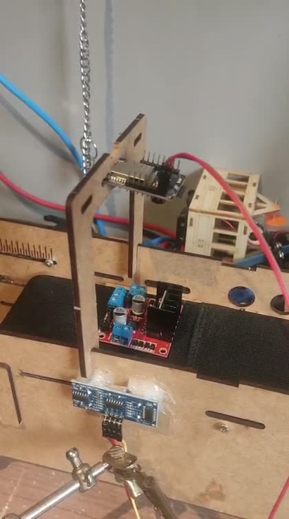

01 / CIÊNCIAS DA NATUREZA
Entender como a tecnologia funciona
O estudo de Física e dos conceitos de eletricidade ajuda a compreender a alimentação de circuitos, a passagem de corrente e o papel dos sensores em um sistema automatizado. Ao observar os componentes da esteira, fica mais fácil relacionar teoria e prática e perceber a importância de conexões corretas e testes cuidadosos.
Também é possível discutir energia, materiais e a utilização consciente de equipamentos eletrônicos. Esses conhecimentos contribuem para entender o funcionamento e as limitações de protótipos reais.
Registro do projeto: módulos e conexões da esteira.